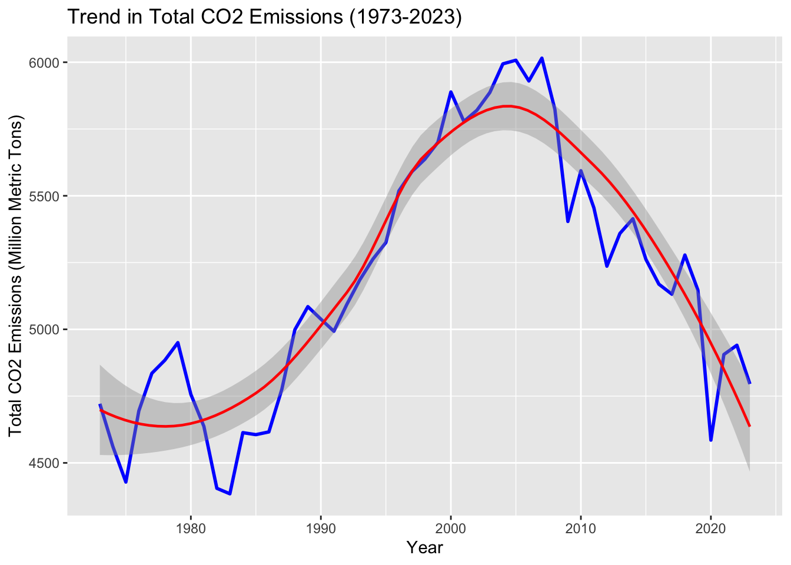
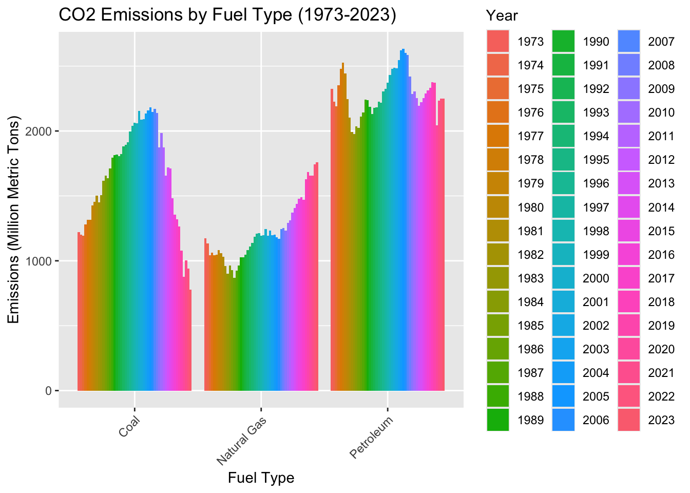
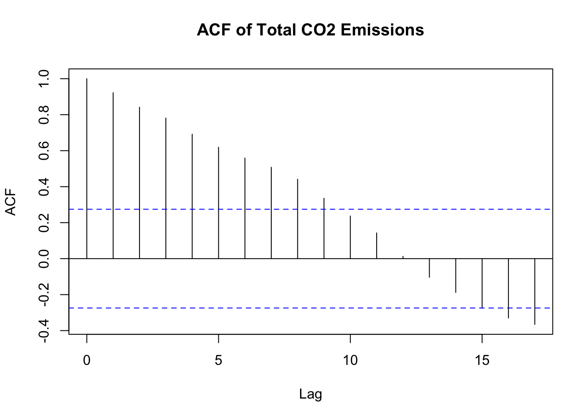
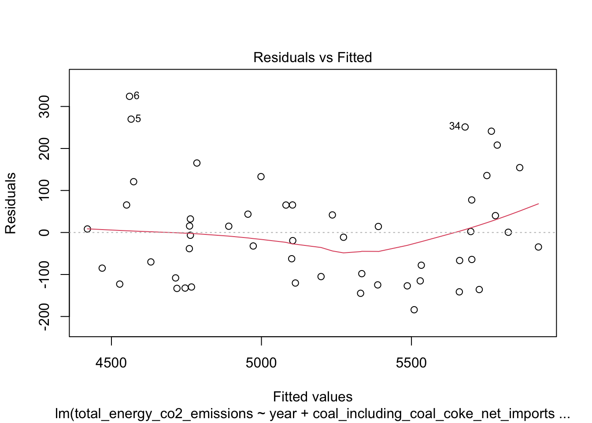
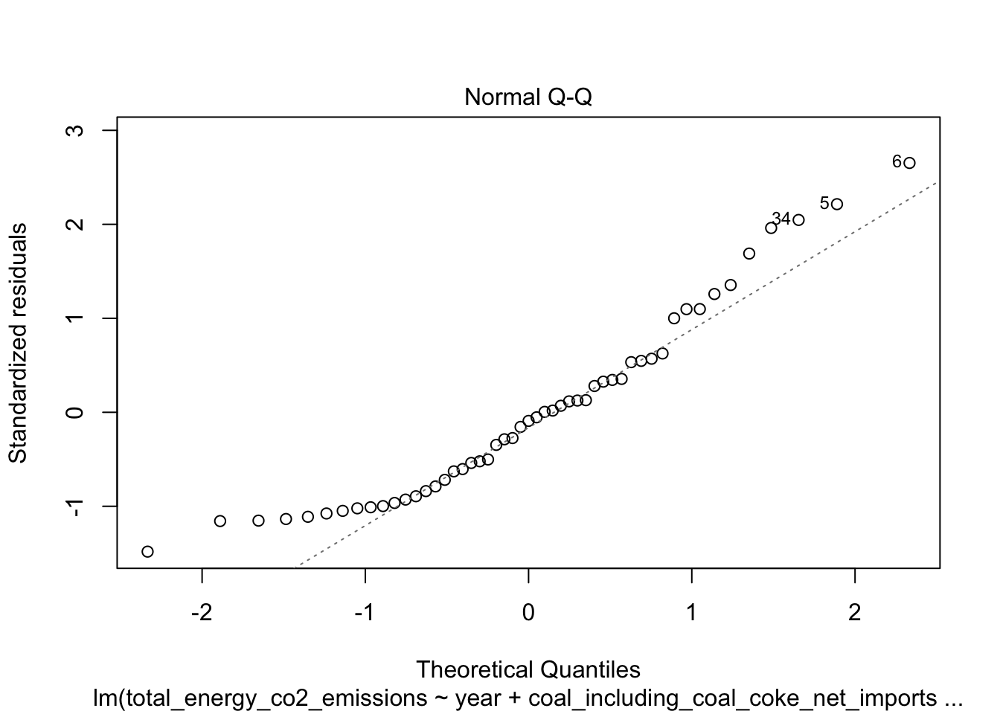
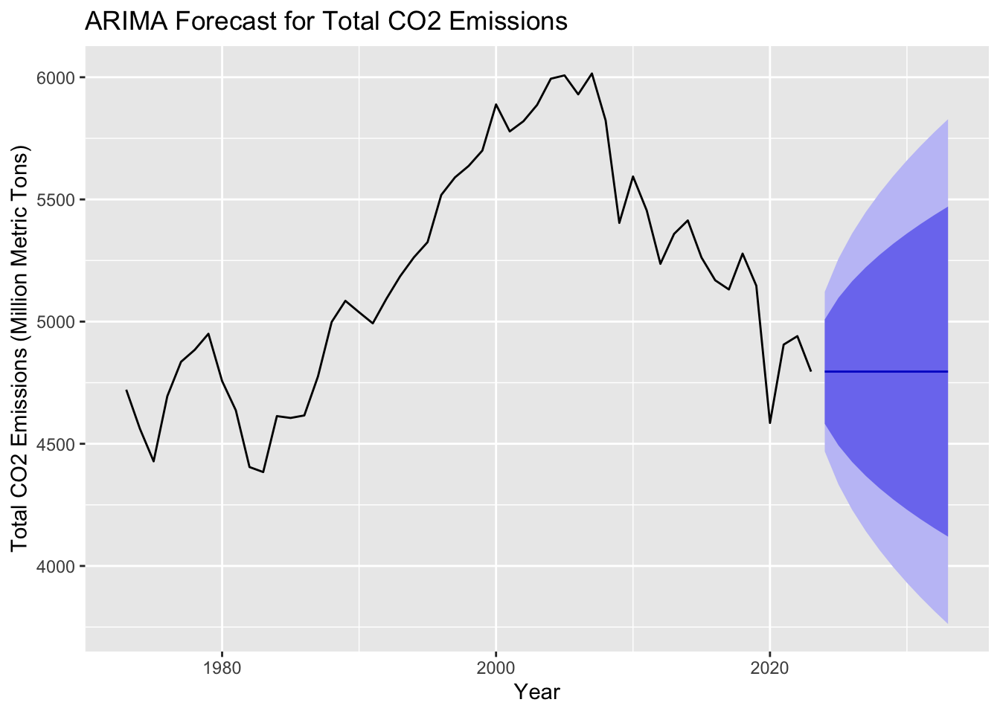

Greenhouse gases are a major driver of climate change, affecting everything from our air quality to the economy’s stability. In the United States, the energy industry is a major contributor to GHG emissions because of how we use coal, natural gas, and oil. It’s really important to understand the impact of these different fuel sources so we can come up with better climate policies and move towards cleaner energy in the future.
This study asks an important question: How much do emissions from coal and natural gas predict the total amount of GHG emissions in the U.S.? By looking at emissions data from the past fifty years, we hope to learn more about emission trends and how we can make better energy policies to reduce them.
This research is important because it helps connect what we know about emissions from a scientific standpoint to how we actually implement policies. While a lot of existing studies focus on overall emissions, there’s not as much detail about the specific contributions of coal and natural gas. This study aims to fill that gap and give us a clearer picture of how these fuel sources impact our environment and how the energy sector is changing over time.
Data Availability
The dataset used in this analysis is available from the U.S. Energy Information Administration (EIA). Link to the data.
Motivation: Understanding the role of coal and natural gas emissions in contributing to total GHG emissions is essential for shaping energy policies. These insights can help evaluate the effectiveness of transitioning to cleaner energy sources and inform future environmental strategies. Prior research has focused on aggregate emissions trends, but the specific contributions of individual fuel sources require further exploration.
Hypotheses:
Null Hypothesis (H₀): Coal and natural gas emissions do not significantly predict total GHG emissions.
Alternative Hypothesis (H₁): Coal and natural gas emissions significantly predict total GHG emissions.
Source: U.S. Energy Information Administration (EIA)
Temporal Range: 1973–2023
Variables: Includes emissions from coal, natural gas, and petroleum, along with total GHG emissions.
Limitations: Sampling does not account for smaller fuel sources or regional variations. Emissions data rely on aggregate national estimates, which could introduce bias.
Visualizing the dataset reveals important temporal trends. The summary statistics underscore the significant contributions of coal and natural gas to total emissions. However, the absence of regional granularity introduces challenges, as emissions vary geographically and temporally based on policy and technological advancements.
Initial Exploration
Exploratory Data Analysis
# Summary statisticssummary(annual_data)
year coal_including_coal_coke_net_imports_co2_emissions
Min. :1973 Min. : 777.3
1st Qu.:1986 1st Qu.:1336.6
Median :1998 Median :1713.4
Mean :1998 Mean :1658.1
3rd Qu.:2010 3rd Qu.:1990.2
Max. :2023 Max. :2180.4
natural_gas_excluding_supplemental_gaseous_fuels_co2_emissions
Min. : 868.2
1st Qu.:1046.6
Median :1191.4
Mean :1218.6
3rd Qu.:1302.4
Max. :1759.7
aviation_gasoline_co2_emissions
Min. :1.397
1st Qu.:1.853
Median :2.583
Mean :2.794
3rd Qu.:3.294
Max. :5.771
distillate_fuel_oil_excluding_biodiesel_co2_emissions
Min. :418.9
1st Qu.:476.3
Median :543.3
Mean :542.8
3rd Qu.:604.1
Max. :657.6
hydrocarbon_gas_liquids_co2_emissions jet_fuel_co2_emissions
Min. : 71.19 Min. :144.1
1st Qu.: 79.41 1st Qu.:174.7
Median : 85.68 Median :215.2
Mean : 86.80 Mean :209.2
3rd Qu.: 95.21 3rd Qu.:241.6
Max. :111.37 Max. :260.6
kerosene_co2_emissions lubricants_co2_emissions
Min. : 0.784 Min. : 6.806
1st Qu.: 2.007 1st Qu.:10.742
Median : 8.274 Median :12.000
Mean :10.599 Mean :11.687
3rd Qu.:16.065 3rd Qu.:12.914
Max. :32.747 Max. :14.717
motor_gasoline_excluding_ethanol_co2_emissions petroleum_coke_co2_emissions
Min. : 892.5 Min. : 48.33
1st Qu.: 978.6 1st Qu.: 56.55
Median :1065.0 Median : 72.71
Mean :1047.7 Mean : 72.74
3rd Qu.:1127.1 3rd Qu.: 81.08
Max. :1216.9 Max. :111.67
residual_fuel_oil_co2_emissions other_petroleum_products_co2_emissions
Min. : 35.87 Min. : 73.79
1st Qu.: 83.63 1st Qu.:110.39
Median :149.39 Median :118.06
Mean :193.60 Mean :117.05
3rd Qu.:237.29 3rd Qu.:129.19
Max. :529.04 Max. :150.88
petroleum_excluding_biofuels_co2_emissions total_energy_co2_emissions
Min. :1978 Min. :4384
1st Qu.:2193 1st Qu.:4786
Median :2255 Median :5147
Mean :2295 Mean :5179
3rd Qu.:2398 3rd Qu.:5554
Max. :2633 Max. :6015
# Trends in total emissionsannual_data %>%ggplot(aes(x = year, y = total_energy_co2_emissions)) +geom_line(color ="blue", size =1) +geom_smooth(method ="loess", color ="red", size =0.8) +labs(title ="Trend in Total CO2 Emissions (1973-2023)",x ="Year",y ="Total CO2 Emissions (Million Metric Tons)" )
`geom_smooth()` using formula = 'y ~ x'

Findings:
The graph shows emissions steadily rising until 2005, peaking at about 6000 million metric tons. This is followed by a gradual decline, aligning with shifts in energy reliance driven by climate policies and technological innovation. The adoption of renewable energy sources like wind and solar played a crucial role in reversing this trend.
The shift around 2005 is particularly significant, as it coincides with major federal and state-level environmental policies aimed at reducing coal use, such as the Clean Air Interstate Rule (CAIR). These efforts, coupled with the economic viability of natural gas due to advancements in hydraulic fracturing, marked a turning point in the U.S. energy sector.
Emissions by Fuel Type
# Bar plot for emissions by fuel typeannual_data %>%pivot_longer(cols =c( coal_including_coal_coke_net_imports_co2_emissions, natural_gas_excluding_supplemental_gaseous_fuels_co2_emissions, petroleum_excluding_biofuels_co2_emissions ), names_to ="fuel_type", values_to ="emissions") %>%mutate(fuel_type =case_when( fuel_type =="coal_including_coal_coke_net_imports_co2_emissions"~"Coal", fuel_type =="natural_gas_excluding_supplemental_gaseous_fuels_co2_emissions"~"Natural Gas", fuel_type =="petroleum_excluding_biofuels_co2_emissions"~"Petroleum",TRUE~ fuel_type )) %>%ggplot(aes(x = fuel_type, y = emissions, fill =as.factor(year))) +geom_bar(stat ="identity", position ="dodge") +labs(title ="CO2 Emissions by Fuel Type (1973-2023)",x ="Fuel Type",y ="Emissions (Million Metric Tons)",fill ="Year" ) +theme(axis.text.x =element_text(angle =45, hjust =1))

Findings:
The bar plot underscores a sharp decline in coal emissions post-2005, coinciding with increased adoption of natural gas. Despite stable petroleum emissions, the energy landscape has undergone significant transformations, signaling policy-driven shifts and advancements in energy efficiency.
Natural gas stands out as a ‘bridge fuel.’ Its cleaner than coal, making it a popular choice. But there’s a downside: leaks during production and transport could undo its benefits. This underscores the need for balanced policy approaches that weigh short-term reductions against long-term sustainability.
Additionally, the stability of petroleum emissions indicates that the transportation sector remains a significant challenge. The lack of substantial reduction in this area highlights the need for increased adoption of electric vehicles and alternative fuels.
Initial Visualization
# Autocorrelation functionacf(annual_data$total_energy_co2_emissions, main ="ACF of Total CO2 Emissions")

Findings:
Autocorrelation analysis confirms that annual emissions are strongly influenced by prior years, justifying the need for time-series modeling approaches. This persistent dependency highlights the inertia within energy systems, where shifts require sustained policy and market incentives.
The high autocorrelation suggests that any changes in emissions trends, whether increases or decreases, are likely to persist for several years. This reinforces the importance of consistent policy application over time to ensure long-term environmental benefits.
# Fit a linear modellm_model <-lm( total_energy_co2_emissions ~ year + coal_including_coal_coke_net_imports_co2_emissions + natural_gas_excluding_supplemental_gaseous_fuels_co2_emissions,data = annual_data)# Model summarysummary(lm_model)
Call:
lm(formula = total_energy_co2_emissions ~ year + coal_including_coal_coke_net_imports_co2_emissions +
natural_gas_excluding_supplemental_gaseous_fuels_co2_emissions,
data = annual_data)
Residuals:
Min 1Q Median 3Q Max
-183.90 -106.54 -11.34 65.39 324.11
Coefficients:
Estimate
(Intercept) 2.404e+04
year -1.191e+01
coal_including_coal_coke_net_imports_co2_emissions 1.430e+00
natural_gas_excluding_supplemental_gaseous_fuels_co2_emissions 2.110e+00
Std. Error
(Intercept) 6.593e+03
year 3.484e+00
coal_including_coal_coke_net_imports_co2_emissions 7.308e-02
natural_gas_excluding_supplemental_gaseous_fuels_co2_emissions 2.480e-01
t value Pr(>|t|)
(Intercept) 3.647 0.000664
year -3.420 0.001306
coal_including_coal_coke_net_imports_co2_emissions 19.570 < 2e-16
natural_gas_excluding_supplemental_gaseous_fuels_co2_emissions 8.510 4.47e-11
(Intercept) ***
year **
coal_including_coal_coke_net_imports_co2_emissions ***
natural_gas_excluding_supplemental_gaseous_fuels_co2_emissions ***
---
Signif. codes: 0 '***' 0.001 '**' 0.01 '*' 0.05 '.' 0.1 ' ' 1
Residual standard error: 126.9 on 47 degrees of freedom
Multiple R-squared: 0.9325, Adjusted R-squared: 0.9282
F-statistic: 216.5 on 3 and 47 DF, p-value: < 2.2e-16
Findings:
Regression analysis reveals:
Coal and Natural Gas as Key Predictors: Coal (β = 1.43) and natural gas (β = 2.11) emissions are significant predictors of total emissions. These coefficients underscore their critical role in shaping national emissions profiles.
Temporal Decline: The year variable (β = -11.91) reflects a downward trend, aligning with broader shifts toward decarbonization.
Model Strength: An adjusted R² of 0.93 indicates the model effectively explains 93% of total emissions variation.
The significant coefficients validate the importance of coal and natural gas in determining overall GHG emissions. The results highlight that while natural gas is contributing to reductions in total emissions, its overall impact is moderated by its role in replacing coal rather than being phased out itself.
Durbin-Watson test
data: lm_model
DW = 0.46072, p-value = 9.964e-14
alternative hypothesis: true autocorrelation is greater than 0
# Residual plotsplot(lm_model, which =1:2)


Findings:
The residual diagnostics point to positive autocorrelation (DW = 0.46, p < 0.001). In simpler terms, the data suggests that we need more sophisticated models, like ARIMA, to make better predictions.
Positive autocorrelation in the residuals suggests that omitted variables or structural shifts in energy markets may influence the model. Addressing these factors would enhance the predictive capacity of future analyses.
Projections
ARIMA Modeling
# Fit ARIMA modellibrary(forecast)
Registered S3 method overwritten by 'quantmod':
method from
as.zoo.data.frame zoo
emissions_ts <-ts(annual_data$total_energy_co2_emissions, start =min(annual_data$year), frequency =1)arima_model <-auto.arima(emissions_ts)# Forecastforecast(arima_model, h =10) %>%autoplot() +labs(title ="ARIMA Forecast for Total CO2 Emissions",x ="Year",y ="Total CO2 Emissions (Million Metric Tons)" )

Findings:
The ARIMA forecast suggests that the emissions will continue to drop at a slow rate, but with increasing variability of the predictions over time. This is consistent with the importance of the efforts for the decarbonization, which emphasise the importance of policies in the process.
This shows the limitations of depending on past tendencies, for example, external events such as technological advancements, changes in the economy or policies across the globe may affect these predictions.
Next Steps
Future Directions:
This analysis is useful but can be improved in the future to overcome its limitations and increase its effectiveness:
Regional Data Integration: This would help in identifying the patterns and inequalities based on the regional data.
Renewable Energy Metrics: To understand the energy transition in a better way, it will be important to measure the advancement in solar and wind energy.
Policy Evaluation: Assessing the effects of certain policies would enable proposing effective suggestions for future policies.
Advanced Techniques: The use of machine learning models would enable one to identify complex correlations that would otherwise be hard to establish.
Also, it will be important to examine how energy consumption interacts with socioeconomic factors including income or urbanization to better understand the forces behind emissions. Such findings would be useful for developing strategies that are effective in addressing inequality while addressing climate change.
Therefore, extending the data and employing new approaches will allow future research to elaborate the dynamics of emissions and their effects on climate action.
Discussion
The work we’ve done here gives us some good view into how fossil fuels, especially coal and natural gas, affect greenhouse gas emissions in the United States. From our data we’ve seen some progress in cutting back on emissions, especially since the mid-2000s. Mostly due to the growth of renewable energy technologies and policies that encourage using less fossil fuels. Unfortunately those also have their own issues that we won’t talk about today. This is just the first step forward.
Something interesting to note is how natural gas has become both part of the solution and part of the problem. It has been replacing coal as a preferred fuel option helping to lower emissions because it doesn’t have a big of a footprint, but our data lone doesn’t account for the leaks of methane during natural gas extraction and transportation which are a big environmental issue that could be viewed outweighing the benefits. I wonder if supplementing our energy with natural gas is actually holding us back from fully going green in the energy sector.
Another important discovery is that emissions from petroleum have stayed pretty steady. Generally, while we’ve made progress in cleaner power generation other sectors haven’t seen the same reduction in emissions. This shows us why its imperative to motivate the switch to electric vehicles, alternative fuels, and better public transportation to make a lasting impact.
We realized that our dataset has some limitations. While looking at emissions nationwide is helpful, we need more detailed data to understand disparities between regions and emissions from different sectors. For instance, industrial areas and rural regions might have very different energy needs compared to the national average. Policymakers would for example need this kind of localized information to make targeted plans.
The data makes one thing clear change is slow painfully slow. Tackling the challenges of a low carbon future will take persistence and a commitment to long term solutions, not just quick fixes. Using predictive models like ARIMA can help us make projections, but they can be affected by sudden policy shifts or new technologies and don’t generally do a good job predicting data over multiple decades.
In the end, although our data doesn’t explicitly show us the linkages of policy or spatial impact in our data, our analysis shows us how policy, technology, and people’s behavior are all connected in the fight against climate change. We’ve made some progress but we still have a lot of work to do to reach net-zero emissions.
Conclusion
Answering the Research Question:
We found that coal and natural gas are major contributors to greenhouse gas emissions. At the same time, our study highlights gaps in modeling that call for deeper exploration.
Policy Implications:
Decline in Coal Emissions: Reflects the effectiveness of recent policies targeting decarbonization.
Rise in Natural Gas: Indicates both opportunities and challenges, as it serves as a bridge fuel in the transition to renewable types.
Stable Petroleum Emissions: Highlights the need for innovation in transportation to achieve significant reductions.
By addressing and pairing our data with our own understandings of policies, we can picture the nuances of emissions trends and their broader implications for climate policy. The analysis emphasize the importance of balancing immediate reductions with long term sustainability. Though that is easier said than done. Chasing a steadgy transition for both the environment and society.
Moreover, through our integration of time series and predictive models demonstrates how data science can be leveraged to address pressing environmental challenges. As we refine our approaches, such analyses will become even more valuable in guiding innovation toward a sustainable future.